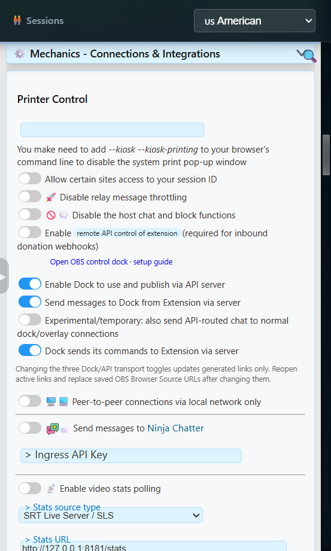
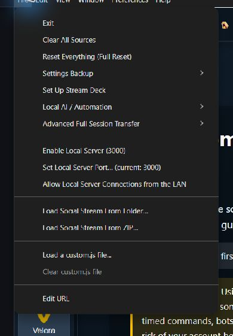

Which Mode Should I Use?
Most users should not enable Local Server. The Chrome extension and normal SSApp setups can use Social Stream's hosted WebSocket service by enabling the routing switches shown below. Local Server is an advanced replacement for the hosted relay.
| Mode | When To Use It |
|---|---|
| Normal WebRTC | Keep the defaults when your Dock and overlays already connect reliably. No server flags are needed. |
| Hosted WebSocket | The normal server fallback for the Chrome extension or SSApp. It uses Social Stream's public hosted relay and does not require File > Enable Local Server. |
| Local Server | Advanced use only: self-host the relay on the SSApp computer, or use it when a regional, corporate, or restricted network cannot reach the public hosted WebSocket service. |
Enable Hosted WebSocket Mode
- Open the Social Stream Ninja extension popup or the settings panel in SSApp.
- Open Global settings and tools > Mechanics - Connections & Integrations.
- Enable Enable Dock to use and publish via API server. This adds
serverto supported generated links. - Enable Send messages to Dock from Extension via server. This adds
server2and carries captured chat to the Dock. - If you want replies or moderation and source commands that travel from the Dock back to the extension, enable Dock sends its commands to Extension via server. This adds
server3. - Leave Experimental/temporary: also send API-routed chat to normal dock/overlay connections off unless you are specifically testing additive delivery.
- Leave Peer-to-peer connections via local network only off for the normal hosted setup.
- Copy fresh Dock and overlay links, replace old saved URLs in OBS, and reopen any pages that were already running.

server and server2; add server3 for replies and commands.If the Dock offers Enable Server Fallback, that shortcut enables the chat and command fallback routes together. Open this settings section and confirm the first Enable Dock to use and publish via API server switch is also on for the complete three-route setup.
What The Three Server Flags Do
| Flag | Direction | Use |
|---|---|---|
server | Dock/API route | Lets supported Dock and API pages use and publish through the hosted server route. |
server2 | Extension to Dock | Sends captured chat messages to the Dock through the hosted server. |
server3 | Dock to extension | Returns supported replies and commands to the extension. It is optional for a view-only Dock. |
A generated two-way Dock link may contain:
https://socialstream.ninja/dock.html?session=YOUR_SESSION_ID&server&server2&server3Copy generated links instead of adding flags to every page by hand. Routing support differs between the Dock, overlays, alerts, games, and utility pages.
Advanced: Use SSApp's Local Server
Local Server replaces the public hosted WebSocket endpoint with a relay running inside the Social Stream Ninja desktop app. Use it when you intentionally want to self-host the relay or the public server cannot be reached from your network or region.
This is a relay, not a website host. It does not serve the SSN interface, capture platform chat by itself, or expose the Local Control API.
- Complete the hosted-route switch setup above. The same
server,server2, and optionalserver3directions still apply. - In SSApp, choose File > Enable Local Server. The menu shows the selected port.
- Copy fresh Dock and overlay links. SSApp adds
localserverand the activelocalserverportwhere supported. - Replace old saved URLs in OBS and reopen active pages.
- Send a fake test message, then test a reply or Dock command if
server3is enabled.

New installations normally use 127.0.0.1:3003. An upgraded installation that already used port 3000 may keep it. A generated local two-way Dock link may contain:
https://socialstream.ninja/dock.html?session=YOUR_SESSION_ID&server&server2&server3&localserver&localserverport=3003For mini-games, enable Send messages to Dock from Extension via server and copy the game link after selecting the game. Local game links with server2 receive captured chat directly from SSApp, even when no Dock is open. Changing games keeps the local mode and port.
The API sample and test-message tool use WebSocket in local mode. The local relay does not accept the public API's HTTP GET, POST, or webhook URLs. Public webhook receivers need the hosted relay; provider-specific reliable receivers are separate services.
Local Server does not make every feature work offline. Waitlist, Word Cloud, Custom GIF Commands, private chatbot requests, and AI/co-host control bridges still use WebRTC for some or all communication. Website files, platform chat, and external AI, voice, music, or payment services can still require internet access.
Advanced Local Options
Using Another Port
- Choose File > Set Local Server Port.
- Select an unused port from
1024through65535. - Copy fresh generated links so they contain the new
localserverport. - Replace saved OBS URLs and reopen active pages.
Changing this port does not change the Local Control API on 17777 or the local media server on 3001.
Optional Trusted-LAN Access
File > Allow Local Server Connections from the LAN changes the relay from loopback-only to listening on the computer's network interfaces. A client on another device must connect to the SSApp computer's LAN address, not 127.0.0.1.
LAN mode has no authentication or encryption. Use it only on a trusted private network. Do not port-forward it or expose it to the internet. For normal cross-machine internet control, use Social Stream's existing WebRTC or hosted WebSocket transport.
Common Problems
| Problem | What To Check |
|---|---|
| Dock or overlay stays blank | Confirm the source and page use the same session and password. For hosted mode, confirm server and server2 are in a freshly copied Dock link. |
| Chat arrives but replies fail | The incoming and command routes are separate. Enable Dock sends its commands to Extension via server so the link includes server3. |
| Hosted WebSocket will not connect | A regional, corporate, school, or filtered network may block the public relay. Try another network first; advanced SSApp users can use Local Server instead. |
| The link uses port 3000 but SSApp shows 3003 | Replace the old link. New installs add localserverport=3003; older installs may intentionally remain on 3000. |
| Local Server will not start | Another program may own the port. Choose another unused port, restart the relay, and recopy links. |
| Game joins work intermittently | Copy the game link again after selecting the preset. Confirm its session, localserverport, and incoming chat route match SSApp. Saved OBS URLs do not change automatically when you toggle Local Server or change its port. |
| Event Flows reports a background loading error | This concerns website files, not the chat relay. Retry loading when the connection recovers. Toggling the relay preserves the selected Event Flow storage origin; a separate offline startup can still open the packaged interface with its own storage. |
| LAN device cannot connect | Confirm LAN access is enabled, the client uses the SSApp computer's LAN IP, and the firewall permits the selected port. |